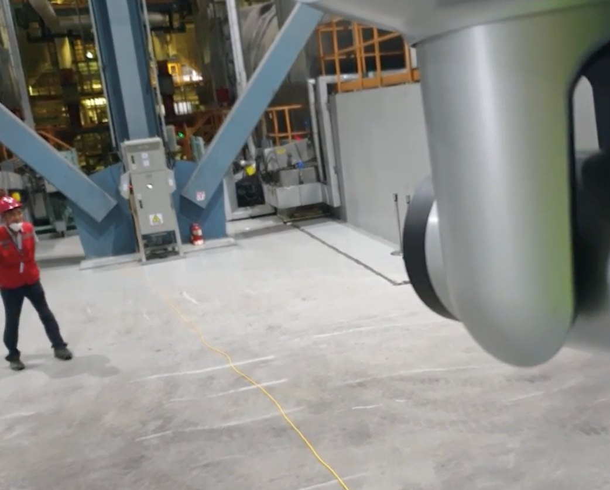

Erprobt in einer Stadt und einem Kraftwerk
Beide Projekte wurden in Südkorea umgesetzt. Jede Zahl nennt Messbedingungen, Zeitraum und Quelle. Pilotergebnisse sind keine Zusage für andere Standorte.
Referenz 01 · Stadt Siheung
Pilotprojekt Motorradlärm im Stadtteil Baegot
Im Stadtteil Baegot, an der Straße Haesong-Sipri-ro, gab es wiederkehrende Beschwerden über Motorradlärm. Das System wurde installiert und erfasste Ursache und Tageszeit. Der Betrieb umfasste nur Beobachtung und Hinweise, keine Kontrollen.
| Ort | Baegot, Stadt Siheung, Provinz Gyeonggi, Südkorea |
|---|---|
| Umfang | 4 Standorte mit 4 Geräten |
| Montage | Masten der Verkehrsdetektion |
| Genehmigung | Erste Genehmigung: 01.12.2025 bis 27.02.2026 |
| Betriebsform | Nur Beobachtung und Hinweise, keine Kontrollen |
Der Rückgang der Beschwerden bezieht sich nur auf das Installationsgebiet. Wie stark Beobachtung und Hinweise das Verhalten verändert haben, wird gesondert analysiert. Ein Ergebnis für andere Gebiete liegt nicht vor.

Referenz 02 · Korea Electric Power Corporation (KEPCO)
Akustisch gekoppelte Sicherheitsüberwachung im Kraftwerk Taean
Im Wärmekraftwerk Taean wurde geprüft, ob Schallinformationen die CCTV-Überwachung ergänzen. CUSMOS entwickelte und lieferte eine Technik, die Gefahren über Schall erkennt und die Kameras mit der Leitstelle verbindet.
Auf Basis des PoC wurde zusätzlich ein Echtzeit-Ultraschallbildsystem zur genauen Prüfung von Anlagenfehlern entwickelt.
Referenzkunden
Öffentliche Stellen und Partner in Korea
Die Liste zeigt die Art der Zusammenarbeit. Sie ist keine Aussage über Umfang oder Dauer einzelner Verträge.
Die Referenzen beziehen sich auf Projekte in Südkorea. Referenzen in Deutschland oder der EU: [TBD]
Ein ähnlicher Fall an Ihrem Standort?
Beschreiben Sie den Ort, die Geräuscharten und das Ziel. Wir prüfen, ob sich ein Pilotprojekt eignet.